Problems are designed
[Standfirst: a sentence or two that sets up the argument.]
[Subhead]
[Body text.]
[Body text.]
[Subhead]
[Body text.]
As a longtime internet denizen, my practice has evolved over the years. But I’ve been consistently interested in the ways that technology has distorted how we live and work.
With years of hands-on experience leading & building technology for millions of people, my lens has always been focused on how we can improve experiences for people.
Currently, I run Vloora, where I’m building the rails of the agentic web. I’m an Assistant Professor of Practice in Urban Tech at the University of Michigan.
[Standfirst: a sentence or two that sets up the argument.]
[Body text.]
[Body text.]
[Body text.]
[Standfirst: a sentence or two that sets up the argument.]
[Body text.]
[Body text.]
[Body text.]
A prototype for legacy record modernization that parses the files people already produce, resolves identities with a matcher that logs how each match was made and refuses ambiguous ones, and publishes the results as portable ATProto records.
Schema design, identity resolution, ATProto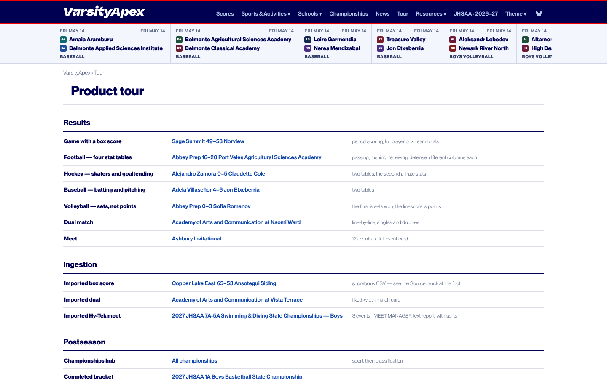
An escape game that runs from one HTML file, with no server or install. Story text, game rules and state are kept apart, so the writing can change without breaking the game.
Single file apps, content rules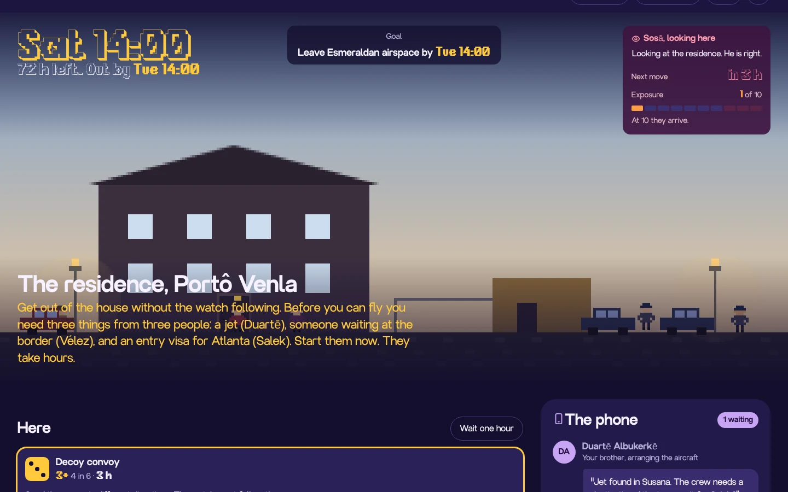
Ratings for every Oregon high school tennis team, built from four years of match results. The OSAA seeds its 2027 dual team championship from these rankings. The model has to rate teams fairly when most of them never play each other.
Rating models, sparse data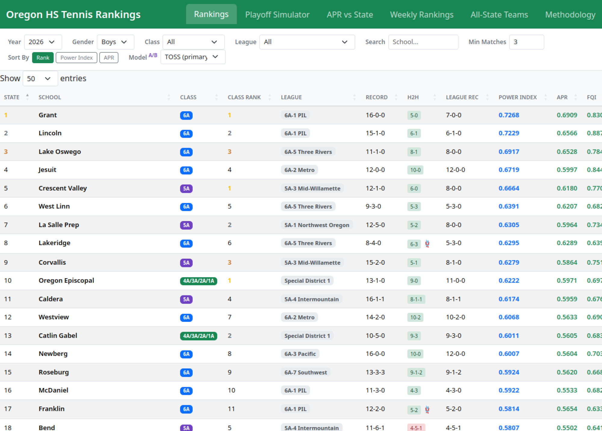
Lets a league try a salary cap system before adopting it. Each of its 18 mechanics, from luxury taxes to amnesty, is a separate module in a pure TypeScript engine, so rules can be swapped in and compared.
Mechanism design, modular rules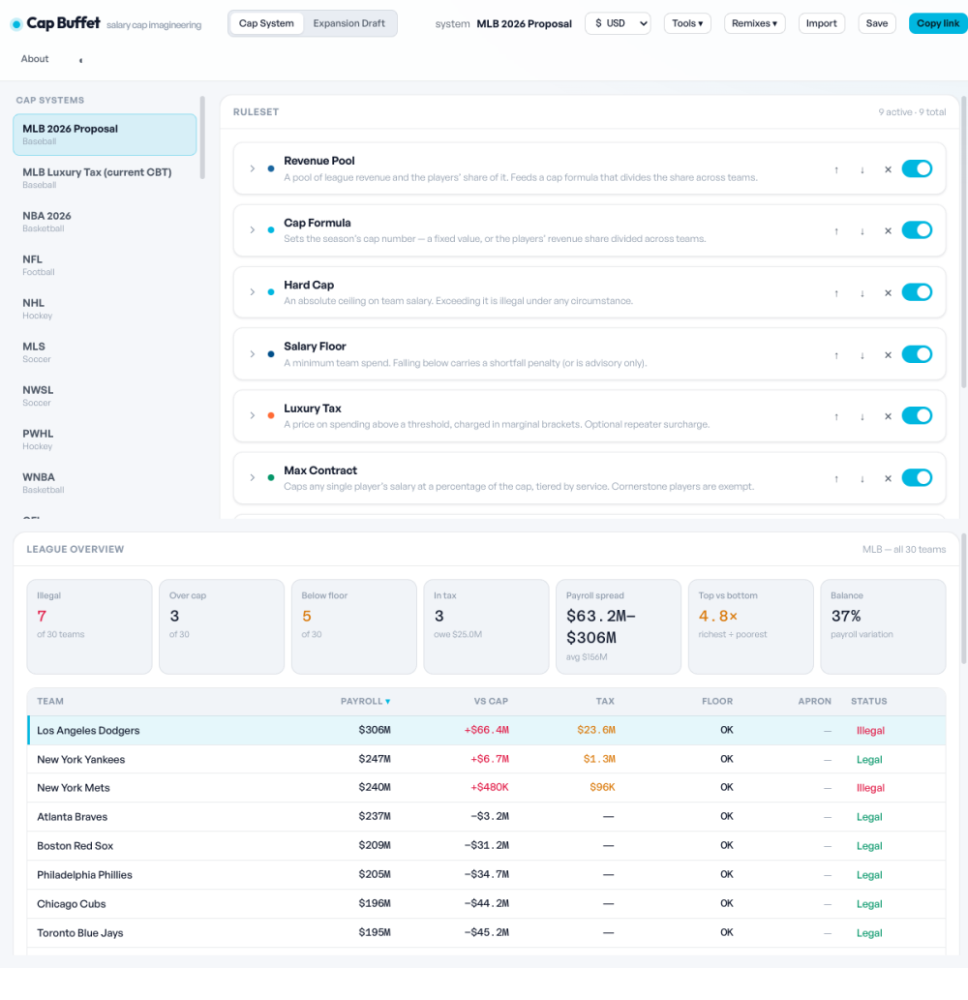
Daily price and activity indices for the AI economy, built from public data while I was EIR at State Capacity AI. They apply the method behind a consumer price index to AI spending.
Index methodology, data pipelines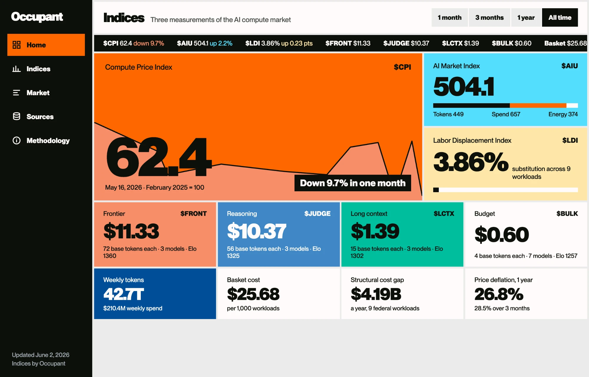
The first advanced stats for pesäpallo, the Finnish cousin of baseball: pitching, defensive and batting metrics for a 104 year old sport that only had counting stats.
Sabermetrics, rating models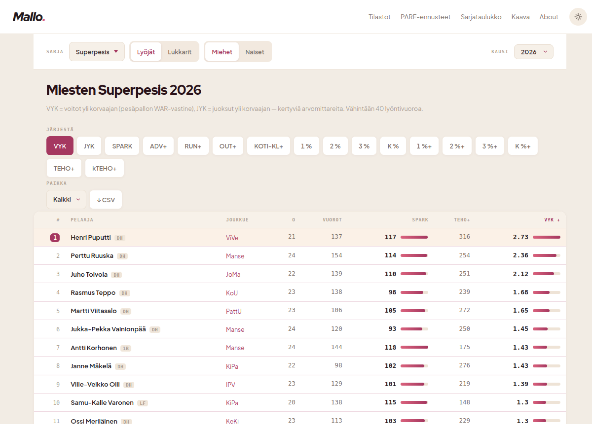
A team tennis game where juniors, college programs and a coed pro league share one rating scale. A point by point engine, ported from my baseball simulation, plays every serve and rally.
Simulation engines, shared ratings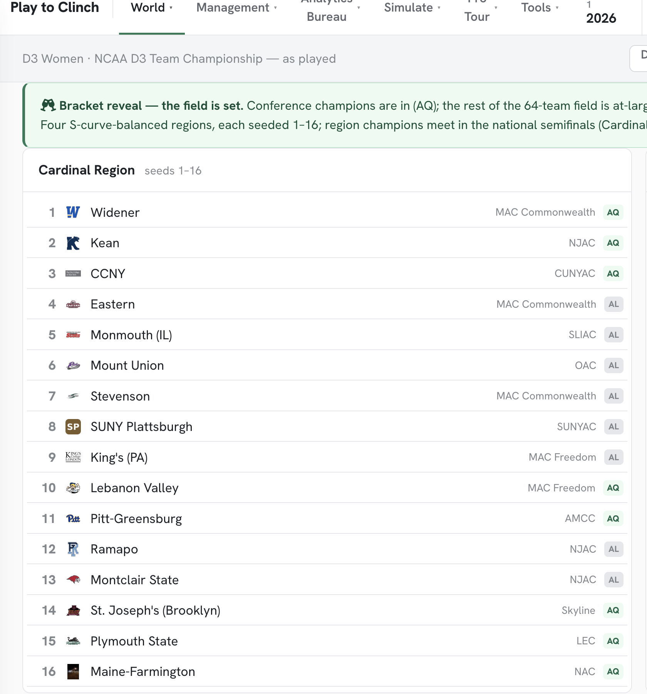
An invented gridiron sport with its own rulebook, a probability engine that plays it and a 280 team universe to play it in.
Probability engines, rules design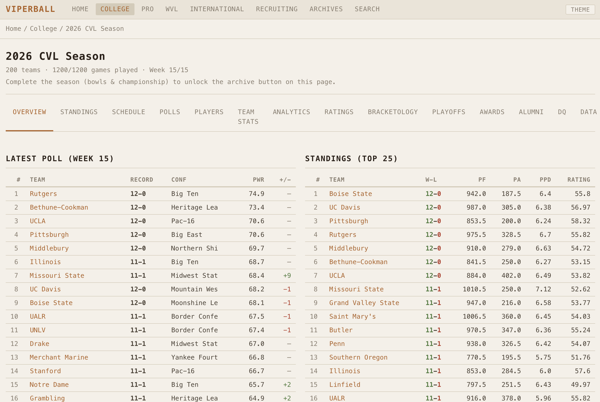
Baseball rebuilt as one continuous 27 out half per side, in a simulated world with its own stats and economy. More than 140 engineering decision records explain why each rule works the way it does.
Decision records, simulation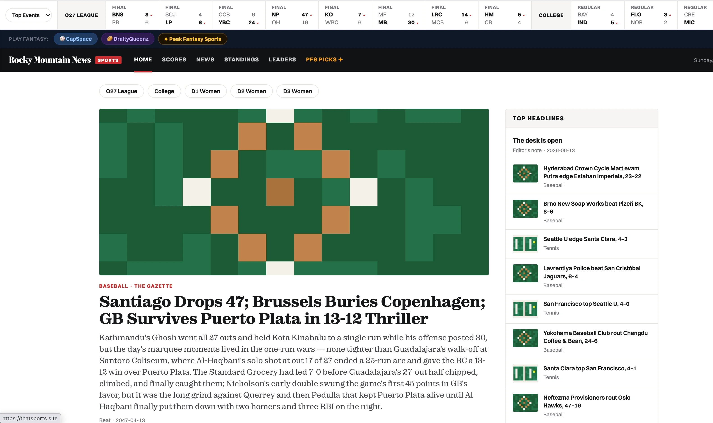
A matching model for dating apps that pairs people using game mechanics and behavioral signals.
Matching algorithms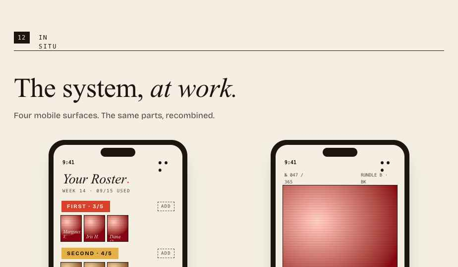
A reference app for live audio rooms on ATProto, using ATProto OAuth and LiveKit. Fork the repo to run your own.
ATProto, open source reference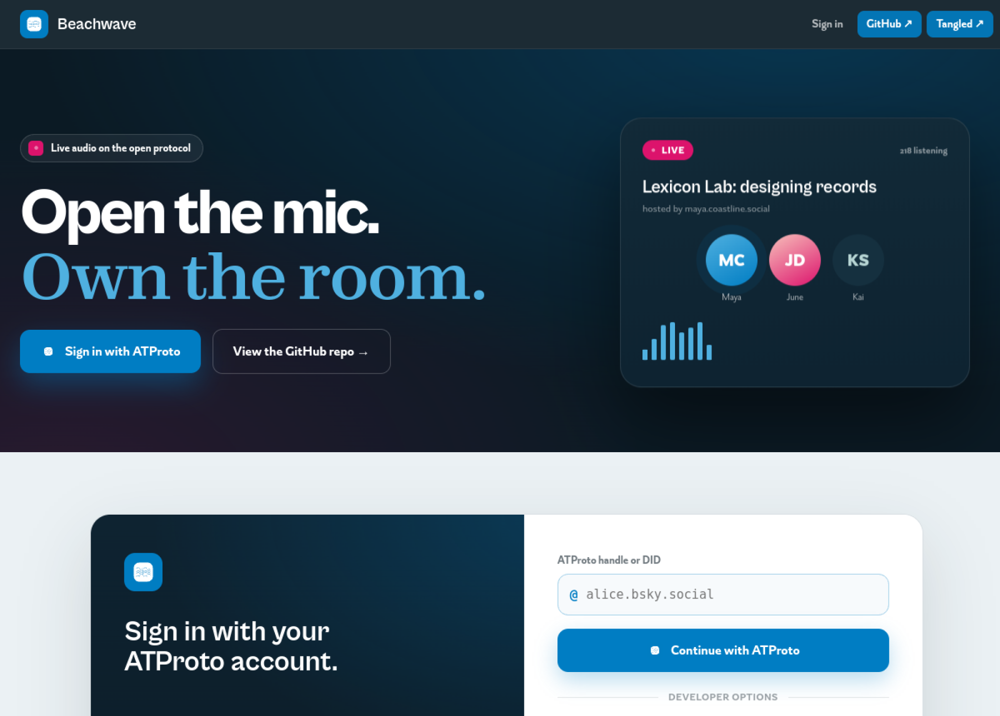
A deck of 46 cards for getting past creative block.
Card design$ npm i closedtabReviews the work AI agents do. Each run leaves an after-action record of what you asked for, what the agent did, and the calls it made on its own. It scores that record and reconciles it against a trace of what actually happened. CLI and MCP.
$ npm i prosekeepCarries an author’s editorial decisions across repositories and agent tools. Plain-language and house-style checks, source comparisons, a review protocol, an Agent Skill, a CLI, and an MCP server. It keeps an agent from turning your argument into generic AI writing.
$ npm i plain-language-defaultFederal plain-language rules packaged for agents. It installs as a project skill and writes the rules where an agent will actually read them. It also checks a draft from the CLI or over MCP.
$ npx -y github:quarterback/pbbg-content-schema install-skillA standalone content architecture package for separating interface language, narrative structure, and game definitions in browser games developed with agents. It provides JSON Schemas, scoped writing policies, a neutral fictional example, reference projection tooling, a local linter CLI, an agent skill, and a local MCP server.